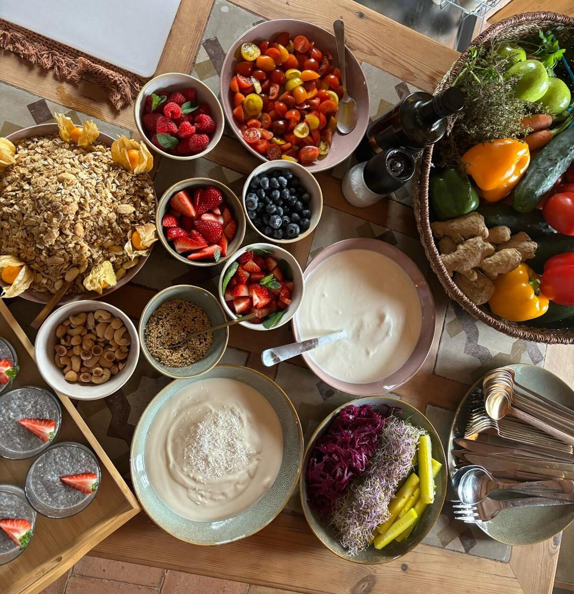
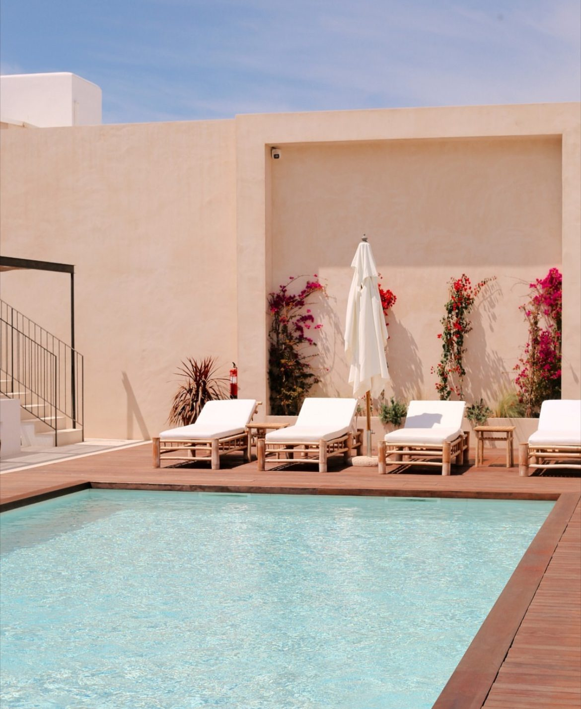
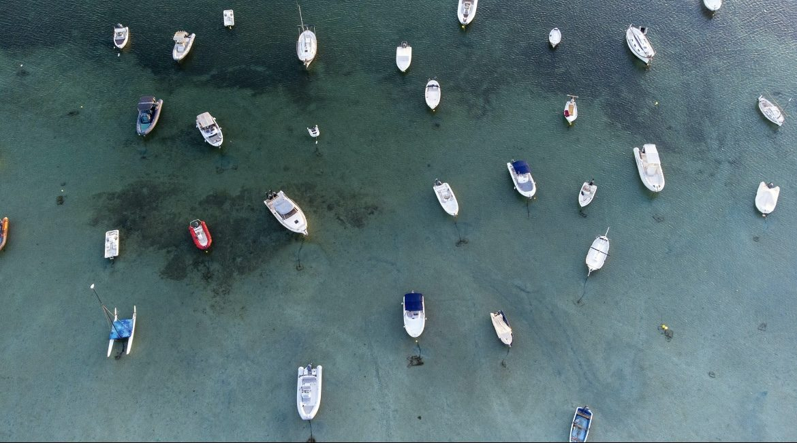
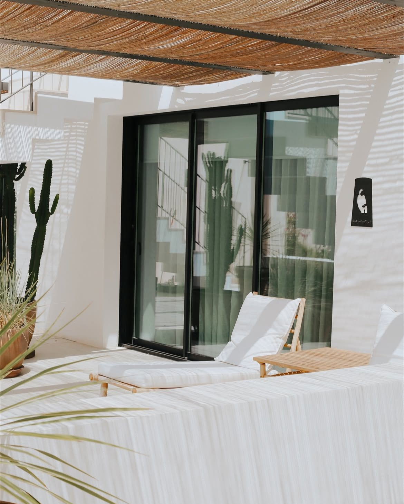
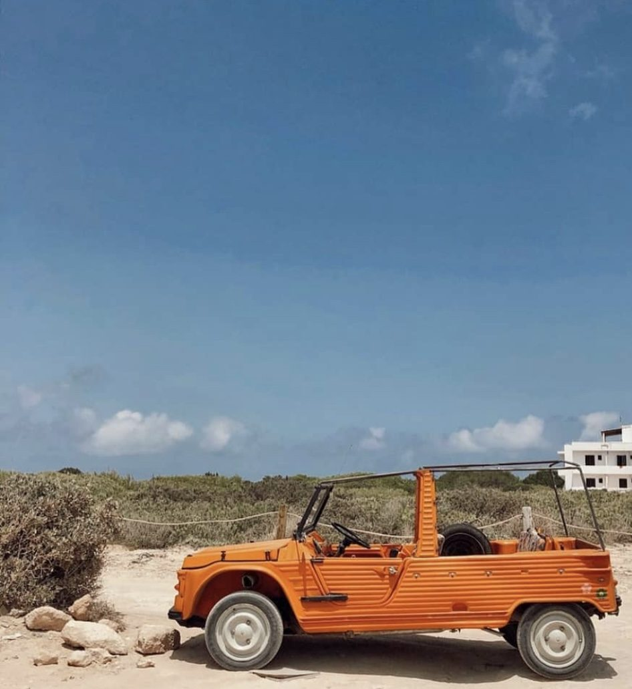

Lo esencial del retiro
- ✔ Alimentación consciente y enfocada en salud intestinal.
- ✔ Yoga y meditación para calmar el sistema nervioso.
- ✔ Talleres de bienestar con Irene Amezcua.
- ✔ Alojamiento 3 noches en un entorno idílico frente al mar.
* Programa diseñado para ayudarte a bajar el “ruido”, ordenar hábitos y reconectar con tu energía.
Incluye
- Traslados en la isla según planificación.
- Brunch y cenas. Las cenas se disfrutarán en restaurantes de la isla frente al mar, con sabores locales y un entorno único. Una de ellas será algo totalmente distinto y especial… una cena sorpresa que te enamorará ✨
(* todo incluído en el precio) - Sesiones de nutrición integrativa (microbiota, envejecimiento, sistema nervioso).
- Clases de yoga adaptadas al nivel del grupo.
- Prácticas de respiración y meditación.
- Kit de bienvenida + cuaderno de trabajo.
No incluye vuelos/ferry. Código descuento disponible para ferry.
Programa (resumen)
- Día 1: Bienvenida, ritual de conexión y cena anti-aging.
- Día 2: Rutina de mañana, taller “Microbiota feliz, vida feliz”, yoga al atardecer.
- Día 3: Ruta costera + respiración, taller “Del estrés al bienestar”, cena antioxidante.
- Día 4: Yoga al amanecer, brunch de despedida, organización del autocuidado diario.






Precio y plazas
Habitación compartida: 985 €
Reserva: 50% al inscribirte; resto en el retiro. Plazas limitadas.
Testimonios de ediciones anteriores
“Superó todas las expectativas. La comida, las clases, los detalles… Inolvidable.” — María José
“Te hace entender el porqué, no memorizar listas. Duermo mejor, más energía y digestiones más ligeras.” — Francis
¿Hablamos por WhatsApp?
Te envío toda la información (sin compromiso) y resolvemos dudas de logística, viaje y plazas.
Pedir info ahora